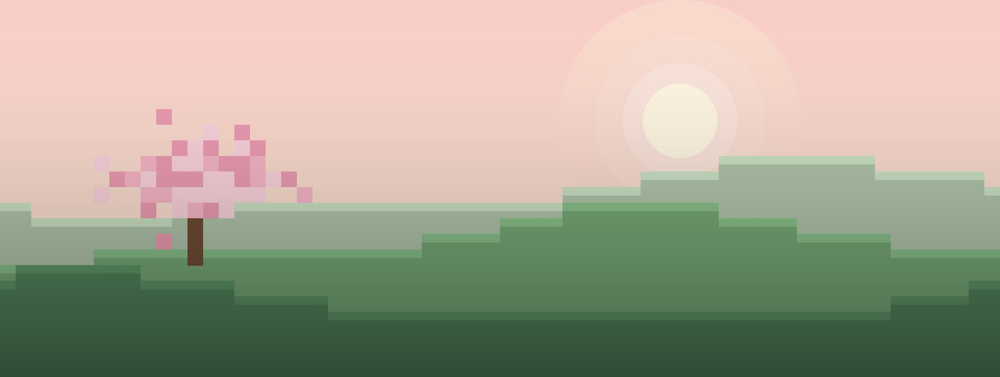

去实例库新建一个，或在资源中心装一个整合包
准备中
最近游玩
全部实例 →启动用时—从点击到游戏窗口出现
内存—
下载源自动BMCLAPI 镜像优先，失败回退官方
角色
账户与皮肤 · 拖动模型旋转
账户
需要先在设置里填写 Azure 客户端 ID
皮肤
实例库
每个实例的存档、模组、设置互相独立
资源中心
来自 Modrinth，一键安装到 当前实例
Wiki 内嵌在 Windows 版启动器里，直接显示 zh.minecraft.wiki 的实时页面，可以登录、编辑。
当前环境不支持内嵌，可以在浏览器中打开。
诊断中心
游戏崩溃时，在本地分析日志并给出修复方法
latest.log
设置
改动会自动保存
外观
功能
一键优化
让游戏更顺，也更少被打扰
性能优化模组
游戏
内存与 Java
下载
微软登录需要你自己在 Azure 注册一个应用，并向 Mojang 申请 Minecraft API 权限。没有的话可以先用离线账户（只能进单人和离线服务器）。
EririLily 樱梨启动器D0cK × Claude非 Mojang 或 Microsoft 官方产品